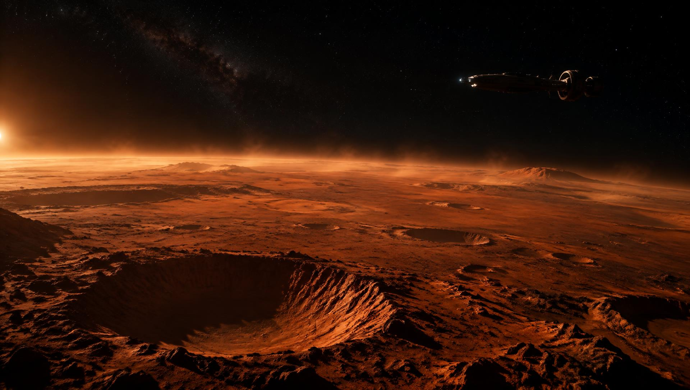
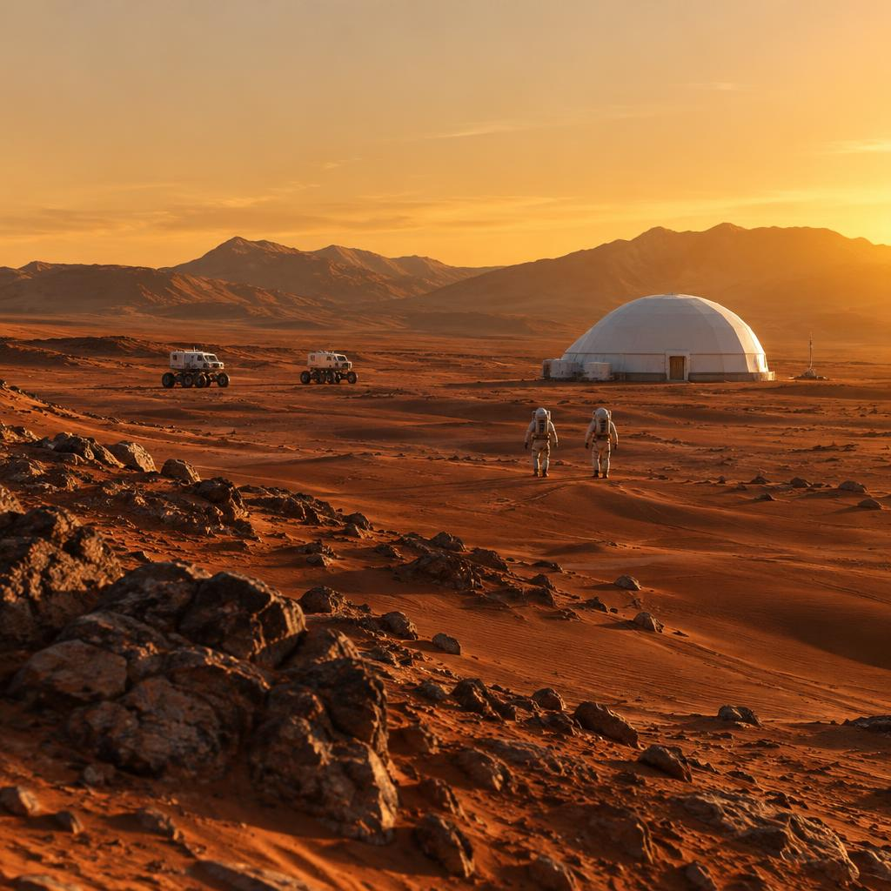
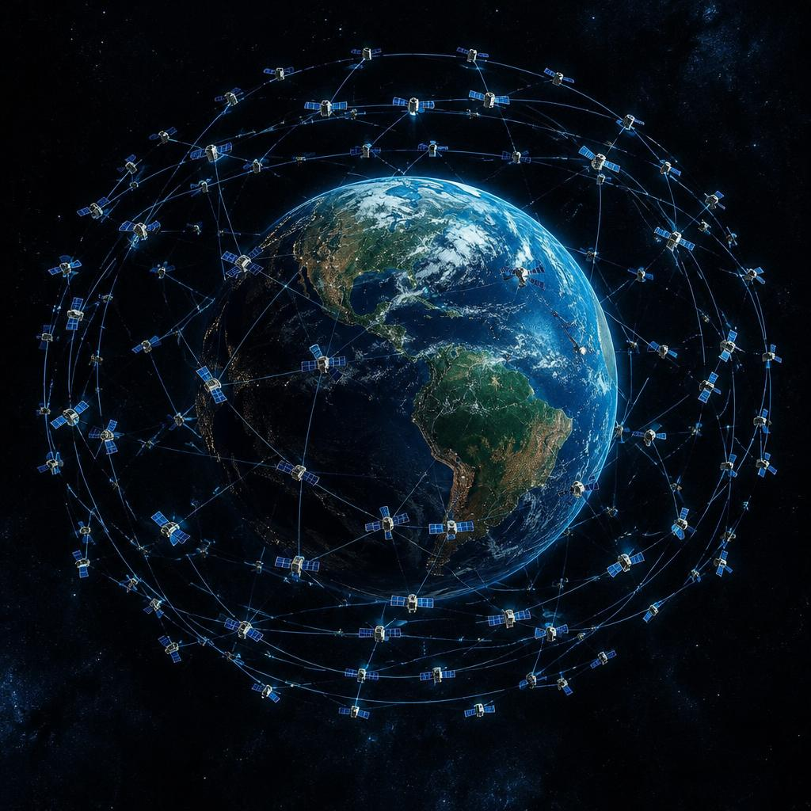

Exploration
Mars & Beyond
Nova was designed backwards from this page: a ship that can carry 150 tonnes to orbit, refuel in space, and land on another world under its own engines.
Why Mars
The one planet we could make home
Mars is the only other planet we know of where humans could plausibly live unaided by constant resupply from Earth. Its day is 24 hours and 37 minutes — close enough that plants and people keep a working rhythm. It has an atmosphere, water ice, and raw materials to make fuel, oxygen and building material.

Living off the land
Everything a base needs, Mars already has — it just needs processing. Electrolysis splits water ice into oxygen to breathe and hydrogen to burn. The Sabatier reaction combines that hydrogen with atmospheric CO2 to make methane: exactly the propellant Nova burns. A single refuelling plant on Mars makes the return trip possible before any crew lands.
Habitats are landed robotically and buried under regolith for radiation shielding. Solar arrays and small reactors carry the power load. The first crews do not explore — they build the infrastructure that makes exploration survivable.

Getting there — the 26-month clock
Earth and Mars line up for the cheapest transfer once every 26 months. Missions launch into that window, coast for six to nine months on a Hohmann transfer arc, and arrive with the planet waiting ahead of them.
The coast is not idle time: crews live inside the Ship's 9-metre cabin, exercise against the same deconditioning as station crews, and fly with enough consumables for contingencies. Arrival is the risky part — an aerocapture pass through the Martian atmosphere bleeds off most of the arrival speed for free, before the engines take over for landing.

The Moon is the proving ground
Mars is a long way to test anything. Our lunar plan uses the Moon as the rehearsal space: Nova-class ships refuelled in Earth orbit fly to lunar orbit, land cargo and crews, and — critically — produce and store propellant on another world for the first time.
Every skill Mars needs, the Moon teaches with a three-day trip home instead of a nine-month one. By the time a Mars window opens, the hardware has already lived on another planet.

A network across deep space
Explorers beyond Earth orbit lose the constant connectivity we take for granted, so the satellite constellation we fly for Earth becomes the model for a deep-space network: relay satellites around the Moon and Mars, laser-linked back to Earth, carrying telemetry, science data and — eventually — video calls home.
Meet the Ship